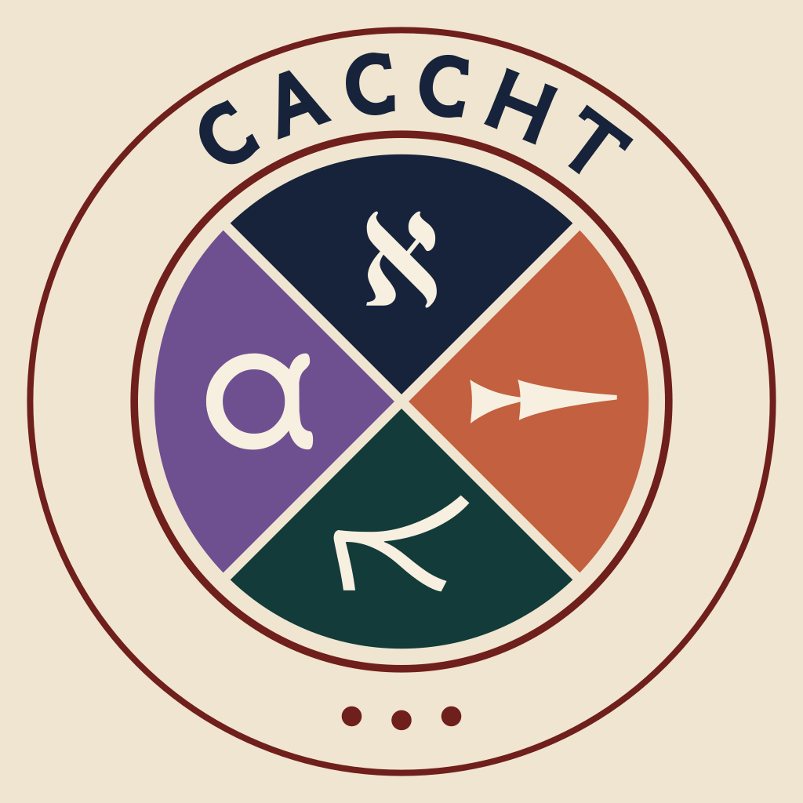

אReleased
The CACCHT Dead Sea Scrolls
Biblical and non-biblical scrolls, transcribed and annotated word by word.
- Source
- Transcriptions provided by Martin Abegg
RepositoryDOICC BY-NC 4.0
Creating Annotated Corpora of Classical Hebrew Texts
CACCHT prepares linguistically annotated editions of ancient Semitic texts and releases them openly, so that a question about grammar, syntax or textual variation can be answered by running code over a whole corpus.
Six corporaFive scriptsOne annotation system

Corpora
Every dataset is a Text-Fabric dataset: text and annotations stored as a graph of nodes and features, read straight into Python. Some carry word-level annotation only; others add phrase and clause structure.
Biblical and non-biblical scrolls, transcribed and annotated word by word.
RepositoryDOICC BY-NC 4.0
Peshitta books, the Syrohexapla Psalms, and post-biblical prose including Ephrem and the Book of the Laws of the Countries.
RepositoryDOICC BY-NC 4.0
The Pentateuch with word-level annotations in BHSA style, plus phrase-atom and clause-atom boundaries.
RepositoryDOICC BY-NC 4.0
Pseudo-Jonathan, the Fragment Targums, the Cairo Genizah fragments and Neofiti — with scribal variants kept as first-order data rather than flattened away.
RepositoryDOICC BY-NC 4.0
278 tablets of Die keilalphabetischen Texte aus Ugarit, annotated down to tablet, column, line and side, with certainty marked on individual signs and alternative readings recorded.
RepositoryDOICC BY-NC 4.0
A Text-Fabric edition of the Greek text, under construction at CenterBLC. The repository holds the conversion pipeline and the dataset as it grows.
Tools
Browser tools built on annotated data. Each one sets parallel witnesses next to each other, chapter by chapter and verse by verse, and is free to use. All of them are work in progress, so expect the data and the interfaces to keep changing.
Method
The Biblia Hebraica Stuttgartensia Amstelodamensis — the annotated Masoretic Text maintained by the ETCBC — sets the conventions. CACCHT follows them and adapts them where a language or a text demands it, so that features keep the same meaning across corpora and a query written for one dataset largely survives the move to another.
g_conslexglossspvsvtpsgnnuvostlstrailer
Word-level features in the Syriac corpus. Each dataset documents its own set.
Nothing needs downloading by hand. Point Text-Fabric at a dataset and it fetches the data, then gives you nodes, features and a search language over them — in a Jupyter notebook, or in the browser it ships with.
The same datasets can be read with Context-Fabric, an API-compatible engine that loads them with a far smaller memory footprint and exposes them to AI agents over MCP.
from tf.app import use
A = use('dt-ucph/sp')tf dt-ucph/spThe Samaritan Pentateuch, in a notebook and in the Text-Fabric browser.
Every dataset lives in a public repository, and each release is archived with a DOI at Zenodo. All of them are free to use for research and education. Licenses differ per corpus, so check the card above and cite the release you actually used.
Publications
2026
Cantanhêde, S. d. O., Naaijer, M., Højgaard, C. C., & Glanz, O. — Religions 17(2), 192.
10.3390/rel170201922024
Naaijer, M., Højgaard, C. C., Schorch, S., & Ehrensvärd, M. — Research Data Journal for the Humanities and Social Sciences 9(1), 1–13.
10.1163/24523666-bja100512023
Naaijer, M., Sikkel, C., Coeckelbergs, M., Attema, J., & Van Peursen, W. Th. — Proceedings of the Ancient Language Processing Workshop, Varna, 23–29.
ACL AnthologyTeam
CACCHT works together with specialists in each field to build the datasets.
With Stefan Schorch and the Samaritanus project, Martin Abegg, Tania Notarius, Alex Sosnovshchenko, Kseniia Yerofeieva, and colleagues at the ETCBC.
The datasets are free for research and education. Each repository states how to cite it.
Open the GitHub organization